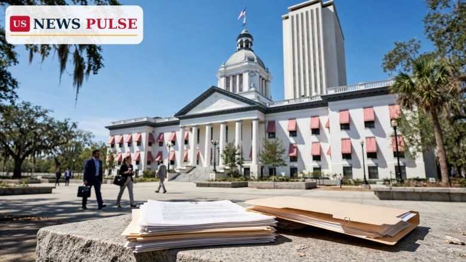

Legal News Briefing — Sharma Electric & HVAC
Window covered: Monday, November 9 – Thursday, November 12, 2026 (Eastern Time) only. Prepared Thursday, November 12, 2026. Sharma profile used for relevance notes: Florida electrical and HVAC subcontractor, works statewide in Florida, builder clients, supplier accounts.
How to read this briefing: Items are ranked biggest / most Sharma-relevant first in the "Top of the briefing" list, then set out in full in sections (1)–(5). Every item gives its exact date, why it matters generally, how it could hit Sharma, and its source. Source type is stated for each item (primary vs. reputable reporting). Anything that could not be confirmed from a primary or reputable source is excluded from the confirmed sections and listed at the end under "Could not verify." Where a section has no confirmed news in the window, that is stated explicitly — older material is never presented as in-window news.
Summary
The biggest confirmed development for Sharma is a new federal law signed Tuesday, November 10, 2026 — the Bankruptcy Threshold Adjustment Act (H.R. 7730) — which permanently raises the Subchapter V small-business Chapter 11 debt limit to $7.5 million for cases filed on or after November 10. The most time-sensitive item is an OSHA Hazard Communication compliance deadline of Friday, November 20, 2026 (flagged in a November 10 alert) for updated labelling, written program, and training on substances. At the Supreme Court, the Court stayed a border-barrier injunction on November 9 and heard argument November 10 in Department of Labor v. Sun Valley Orchards, which could decide whether federal agencies may impose money remedies through in-house judges after SEC v. Jarkesy — a question with direct read-across to OSHA/DOL enforcement against employers. Other confirmed in-window items: a $63 million FTC + 17-state (including Florida) price-accuracy settlement with Family Dollar filed November 12; a HUD immigration-status verification final rule published November 12, effective December 14, 2026; new Florida workers' compensation adjudication rules (Ch. 60Q-6) announced November 9–10, effective November 26, 2026; the IRS FIRE e-filing system retiring November 19, 2026 (reported November 12), which affects Sharma's 1099-NEC filing; and two construction-company Chapter 11 filings on November 11.
Two explicit gaps: (i) Section (4) — no confirmed Florida construction/contractor-law decision, rule, or DBPR/CILB/ECLB disciplinary action dated November 9–12 was found; (ii) Florida legislation and Florida Supreme Court — no laws signed / chapter laws filed and no Supreme Court opinions were confirmed in the window. One widely circulated story — that the President signed a shutdown-ending funding bill on November 12 — could not be confirmed and appears to replicate the November 12, 2025 event; it is quarantined in "Could not verify," not in the confirmed news.
Top of the briefing (ranked)
- Bankruptcy Threshold Adjustment Act signed (Tue Nov 10) — Subchapter V limit permanently $7.5M; cases filed on/after Nov 10. → §5 (also a new federal law for §1).
- OSHA Hazard Communication deadline Fri Nov 20, 2026 — alert published Tue Nov 10; substances labelling/program/training updates due in 8 days. → §3.
- SCOTUS argument, DOL v. Sun Valley Orchards (Tue Nov 10) — can agency ALJs impose back wages/penalties, or must DOL sue in federal court post-Jarkesy? → §1/§3.
- SCOTUS stay in Mullin v. Friends of the Ruidosa Church (Mon Nov 9) — the window's only Supreme Court order on the merits track. → §1.
- Family Dollar $63M FTC + 17-state settlement, Florida included (filed Thu Nov 12) — advertised price vs. charged price enforcement. → §1/§3.
- HUD §214 verification final rule (published Thu Nov 12; effective Dec 14, 2026). → §1.
- Florida workers' comp OJCC rules, Ch. 60Q-6 (announced Mon Nov 9–Tue Nov 10; effective Thu Nov 26, 2026). → §2/§3.
- IRS FIRE system retires Thu Nov 19, 2026; IRIS is the replacement (reported Thu Nov 12) — 1099-NEC season impact. → §3.
- Construction bankruptcies: Tyro Construction (Sub V) and Sinacori Holdings filed Wed Nov 11; Tampa Sub V filing reported Nov 11–12. → §5.
- Florida AG subpoena to Democratic Socialists of America (announced Tue Nov 10) — FDUTPA enforcement signal only. → §2.
Findings
(1) Big legal news — Supreme Court, federal courts, new federal laws, executive actions, agency rules
1.1 — NEW FEDERAL LAW: Bankruptcy Threshold Adjustment Act (H.R. 7730) signed — Tuesday, November 10, 2026.
The President signed H.R. 7730, permanently raising the Subchapter V (small-business Chapter 11) debt-eligibility ceiling from $3,424,000 to $7,500,000 (restoring the pandemic-era level that lapsed in 2024, now without a sunset and subject to periodic inflation adjustment),
Sharma impact — Two directions. (a) If a builder client gets into trouble, it can now reorganize under Sub V with up to $7.5M of debt — meaning Sharma is more likely to face a Sub V plan (with its fast timelines and cramdown rules) than a liquidation when a customer fails;
Read the full story
What happened: The President signed H.R. 7730, permanently raising the Subchapter V (small-business Chapter 11) debt-eligibility ceiling from $3,424,000 to $7,500,000 (restoring the pandemic-era level that lapsed in 2024, now without a sunset and subject to periodic inflation adjustment), and replacing Chapter 13's two debt caps ($526,700 unsecured / $1,580,125 secured) with a single combined $2,750,000 limit. The new limits apply only to cases filed on or after November 10, 2026; at least 50% of a Subchapter V debtor's noncontingent, liquidated debt must arise from commercial activity, and SEC-reporting companies and single-asset real estate businesses remain ineligible. Why it matters generally: It more than doubles access to the streamlined, cheaper Subchapter V reorganization track for small and mid-sized businesses and expands Chapter 13 for individuals/sole proprietors. How it hits Sharma: Two directions. (a) If a builder client gets into trouble, it can now reorganize under Sub V with up to $7.5M of debt — meaning Sharma is more likely to face a Sub V plan (with its fast timelines and cramdown rules) than a liquidation when a customer fails; the Tyro Construction Sub V filing on November 11 (§5) is exactly this pattern. (b) It is also the relief framework available to a company of Sharma's profile if supplier/builder receivables collapse. Note the Middle District of Florida received 324 Subchapter V cases in the 12 months ending June 30, 2026 — reported as the most of any district in the country — so Sharma's home courts see this constantly. Source type: Reputable law-firm alerts (multiple, independent) reporting the White House bill-signing statement of November 10, 2026 ("Congressional Bills H.R. 997, H.R. 1703, H.R. 1945, and H.R. 7730 Signed into Law"); the White House statement itself was cited by name but its URL was not directly retrieved. ArentFox Schiff: https://www.afslaw.com/perspectives/alerts/congress-advances-permanent-75-million-subchapter-v-threshold-giving-more-small — Kaufman & Canoles (Nov 12): https://www.kaufcan.com/newsroom/news/president-signs-permanent-changes-into-bankruptcy-code-for-small-businesses — Read Nov 12, 2026, index.
1.2 — Supreme Court stay: Mullin v. Friends of the Ruidosa Church, No. 26A560 — Monday, November 9, 2026.
In a per curiam order, the Court stayed an October 2, 2026 W.D. Texas preliminary injunction that had halted Big Bend border-barrier construction, holding the government "exceedingly likely" to prevail on the ground that IIRIRA §102 limits judicial review of the DHS waiver to constitutional claims.
Sharma impact — Indirect. It concerns federal construction on the Texas border, not Florida private work; the practical lesson is that injunctions stopping construction projects are vulnerable to emergency stays — relevant expectations if Sharma ever works on a federally funded project that gets enjoined.
Read the full story
What happened: In a per curiam order, the Court stayed an October 2, 2026 W.D. Texas preliminary injunction that had halted Big Bend border-barrier construction, holding the government "exceedingly likely" to prevail on the ground that IIRIRA §102 limits judicial review of the DHS waiver to constitutional claims. The stay runs pending a timely certiorari petition and disposition. Justice Jackson would have denied the stay (secondary coverage describes the vote as 8–1; the order itself records only Jackson's position, so no formal vote count is stated here). Why it matters generally: It reinforces narrow judicial review of executive waiver authority in infrastructure/border construction and signals how emergency applications are being handled this Term. How it hits Sharma: Indirect. It concerns federal construction on the Texas border, not Florida private work; the practical lesson is that injunctions stopping construction projects are vulnerable to emergency stays — relevant expectations if Sharma ever works on a federally funded project that gets enjoined. Source type: Primary — Supreme Court opinion PDF: https://www.supremecourt.gov/opinions/26pdf/26a560_onkq.pdf — Read Nov 12, 2026, index.
1.3 — Supreme Court argument: Department of Labor v. Sun Valley Orchards, No. 25-966 — argued Tuesday, November 10, 2026, 10:04 a.m.
The Court heard argument on whether DOL administrative law judges may impose monetary remedies for H-2A farmworker-program violations — at issue are $556,745.80 ($211,800 in penalties plus $344,945.80 in back wages) — or whether SEC v. Jarkesy and Article III require the government to sue in federal court,
Sharma impact — This is the most Sharma-relevant case argued in the window even though Sharma is not a farm employer: the same Jarkesy logic is being pressed against OSHA/DOL in-house penalty adjudication.
Read the full story
What happened: The Court heard argument on whether DOL administrative law judges may impose monetary remedies for H-2A farmworker-program violations — at issue are $556,745.80 ($211,800 in penalties plus $344,945.80 in back wages) — or whether SEC v. Jarkesy and Article III require the government to sue in federal court, and whether 8 U.S.C. §1188(g)(2) authorises the ALJ remedy. Secondary reporting described the justices as divided. No decision issued in the window. Why it matters generally: The answer will define how much money federal agencies can extract through in-house adjudication across many statutes, not just H-2A. How it hits Sharma: This is the most Sharma-relevant case argued in the window even though Sharma is not a farm employer: the same Jarkesy logic is being pressed against OSHA/DOL in-house penalty adjudication. If agency ALJ money remedies fall, DOL/OSHA enforcement against employers like Sharma would more often have to go through federal court — changing settlement leverage and timelines in any future OSHA citation or wage investigation. Source type: Primary (argument transcript) https://www.supremecourt.gov/oral_arguments/argument_transcripts/2026/25-966_c07d.pdf ; secondary (Nov 11) https://www.workersrights.news/supreme-court-sun-valley-orchards-h2a-farmworker-penalty-agency-fines-argument/ — Read Nov 12, 2026, index.
1.4 — Supreme Court arguments also heard Monday, November 9, 2026 (no decisions).
Hoffmann v. WBI Energy Transmission, No. 25-159 (11:30 a.m.) — Natural Gas Act eminent domain: whether just compensation (including roughly $383,375.76 in North Dakota-law fees/expenses ordered below and reversed by the Eighth Circuit) is governed by state or federal law.
Read the full story
- Hoffmann v. WBI Energy Transmission, No. 25-159 (11:30 a.m.) — Natural Gas Act eminent domain: whether just compensation (including roughly $383,375.76 in North Dakota-law fees/expenses ordered below and reversed by the Eighth Circuit) is governed by state or federal law. Reason (Nov 12) reported the justices skeptical of the property owners. Relevance to Sharma is low (pipeline takings), noted for completeness. Primary transcript: https://www.supremecourt.gov/oral_arguments/argument_transcripts/2026/25-159_5hdk.pdf ; https://reason.com/2026/11/12/supreme-court-seems-skeptical-of-property-owners-in-natural-gas-pipeline-case/
- Nielsen v. Watanabe, No. 25-417 (10:05 a.m.) — Bivens/Carlson damages against federal officers (prison medical care). No realistic Sharma impact. Primary transcript: https://www.supremecourt.gov/oral_arguments/argument_transcripts/2026/25-417_b81g.pdf
- Wednesday, November 11, 2026 was a Court legal holiday (Veterans Day) — no arguments: https://www.supremecourt.gov/oral_arguments/hearinglists/HearingList-November2026.pdf All read Nov 12, 2026, index.
1.5 — Family Dollar $63 million FTC + 17-state price-accuracy settlement — filed Thursday, November 12, 2026.
The FTC and 17 state attorneys general — Florida among them — announced a settlement with Family Dollar Stores over allegations that register prices exceeded shelf, circular, website, and app prices: a $40 million consumer redress fund, a $20 million discount program, and over $3 million to the states,
Sharma impact — The exposure theory translates directly to a service business: the price quoted/advertised vs. the price actually charged is the fact pattern.
Read the full story
What happened: The FTC and 17 state attorneys general — Florida among them — announced a settlement with Family Dollar Stores over allegations that register prices exceeded shelf, circular, website, and app prices: a $40 million consumer redress fund, a $20 million discount program, and over $3 million to the states, plus a required pricing-accuracy program. Family Dollar neither admitted nor denied; the proposed/stipulated order was filed in the E.D. Va. (Norfolk) (case 2:26-cv-1267 per secondary summary; FTC vote 2–0). Why it matters generally: It is a major federal-state consumer-protection enforcement action on advertised-vs-charged pricing, brought jointly under the FTC Act and state UDAP statutes (Florida's is FDUTPA). How it hits Sharma: The exposure theory translates directly to a service business: the price quoted/advertised vs. the price actually charged is the fact pattern. Sharma's written quotes, advertised rates, and final invoices should match, or variances should be documented and consented to in writing — the same mismatch is what just cost a national retailer $63M. Source type: Primary FTC release ("FTC and 17 States Secure $63 Million Settlement with Family Dollar Stores in Price Transparency Win for Consumers," ftc.gov — the release title is confirmed; its exact URL was not returned by the index, so the Reuters URL is cited) and reputable reporting: Reuters, Nov 12, 2026: https://www.reuters.com/legal/litigation/family-dollar-reaches-63-million-settlement-with-us-ftc-states-over-customer-2026-11-12/ — Read Nov 12, 2026, index.
1.6 — HUD final rule: verification of eligible immigration status (Section 214) — published Thursday, November 12, 2026; effective December 14, 2026.
HUD's final rule, "Housing and Community Development Act of 1980: Verification of Eligible Status," 91 FR 72978 (Doc. 2026-23003), revises the §214 regulations to require verification of citizenship/eligible immigration status for all applicants and recipients regardless of age,
Sharma impact — Low-to-moderate and indirect: if Sharma performs work for public-housing or HUD-assisted properties (directly or under a builder/property manager), expect new documentation demands to flow into subcontracts and site-access paperwork in early 2027.
Read the full story
What happened: HUD's final rule, "Housing and Community Development Act of 1980: Verification of Eligible Status," 91 FR 72978 (Doc. 2026-23003), revises the §214 regulations to require verification of citizenship/eligible immigration status for all applicants and recipients regardless of age, and makes prorated assistance temporary pending verification. Secondary analysis (Ballard Spahr, Nov 11) adds operational dates: evidence from mixed-status tenants within 90 days of December 14 (≈March 14, 2027), tenant notices by January 11, 2027, SAVE-system verification. Why it matters generally: It tightens immigration-status verification across HUD-assisted housing. How it hits Sharma: Low-to-moderate and indirect: if Sharma performs work for public-housing or HUD-assisted properties (directly or under a builder/property manager), expect new documentation demands to flow into subcontracts and site-access paperwork in early 2027. It is not an I-9/E-Verify change for Sharma's own hiring — see §3 for the (empty) immigration-rule picture. Source type: Primary — Federal Register, verified live Nov 12, 2026: https://www.federalregister.gov/documents/2026/11/12/2026-23003/housing-and-community-development-act-of-1980-verification-of-eligible-status
1.7 — MSHA deregulatory final rules and revised silica proposal — announced Tuesday, November 10, 2026; published Thursday, November 12, 2026.
The Mine Safety and Health Administration issued five deregulatory final rules (permissible lamps; diesel particulate matter in underground metal/nonmetal mines; foam generator systems; electrical face equipment in coal seams above the water table; final mining of pillars),
Sharma impact — Low direct relevance — stated plainly: MSHA governs mining, not OSHA-governed construction. Sharma's silica exposure on job sites remains under OSHA's construction standard, which this action does not change.
Read the full story
What happened: The Mine Safety and Health Administration issued five deregulatory final rules (permissible lamps; diesel particulate matter in underground metal/nonmetal mines; foam generator systems; electrical face equipment in coal seams above the water table; final mining of pillars), published in the November 12 Federal Register and effective 30 days after publication (≈December 12, 2026). A revised respirable crystalline silica proposal was also published November 12: the PEL stays at 50 µg/m³ (action level 25), comments are due January 11, 2027, with a virtual hearing December 15, 2026, 9 a.m. ET (Docket MSHA-2026-0200). Why it matters generally: Part of a broader federal deregulatory push on workplace-safety rules in the window. How it hits Sharma: Low direct relevance — stated plainly: MSHA governs mining, not OSHA-governed construction. Sharma's silica exposure on job sites remains under OSHA's construction standard, which this action does not change. Source type: Primary DOL/MSHA release, verified live Nov 12, 2026: https://www.msha.gov/news-media/news-releases/2026/11/10/us-department-labor-continues-implement-president-trumps ; secondary: https://www.safetylawmatters.com/2026/11/msha-posts-updated-proposed-silica-rule/ ("MSHA posts updated proposed silica rule," Nov 11) — Read Nov 12, 2026, index.
1.8 — Other federal actions in the window (brief, low Sharma relevance).
Presidential Memorandum on wildfire suppression — Tuesday, November 10, 2026.
Primary White House fact sheet (published 2026-11-10): https://www.whitehouse.gov/fact-sheets/2026/11/fact-sheet-president-donald-j-trump-advances-wildfire-suppression/?query-11-page=3 — No Sharma impact identified.
Federal Register, Vol. 91, No. 217 (Thu Nov 12, 2026), secondary summary only
Proclamation 11080 (Oval Office National Monument); FCC eliminating the 39% national TV ownership cap; DEA placing oveporexton in Schedule IV; DOJ English-only memorandum comment period.
Read the full story
Proclamation 11080 (Oval Office National Monument); FCC eliminating the 39% national TV ownership cap; DEA placing oveporexton in Schedule IV; DOJ English-only memorandum comment period. None affects Sharma's operations. Source: https://bureaucracy.news/2026/11/12/federal-register-watch-november-12-2026/ — Read Nov 12, 2026, index.
Explicit statement for §1 gaps: No new federal statute other than H.R. 7730 (§1.1/§5) was confirmed signed in the window; no federal appellate (circuit court) decision of note to Sharma was confirmed dated Nov 9–12 (a widely recirculated Eleventh Circuit item, Chianne D. v. Florida AHCA/DCF, was in fact filed November 4, 2026 — out of window; see "Could not verify").
(2) Florida — laws, courts, Governor/AG, Florida Bar

2.1 — Attorney General subpoena to the Democratic Socialists of America — announced Tuesday, November 10, 2026.
AG James Uthmeier's office announced an investigative subpoena to the DSA under FDUTPA and Florida solicitation-of-funds laws, probing possible contributions/support from "foreign sources of concern" (Cuba, China) connected to delegations and travel-fund solicitations (a fund reported to have raised over $86,000);
Sharma impact — Minimal and indirect — the only Sharma takeaway is the enforcement signal: Florida's AG is actively using FDUTPA subpoena power this week, the same statute that governs deceptive trade practices by businesses (cf.
Read the full story
What happened: AG James Uthmeier's office announced an investigative subpoena to the DSA under FDUTPA and Florida solicitation-of-funds laws, probing possible contributions/support from "foreign sources of concern" (Cuba, China) connected to delegations and travel-fund solicitations (a fund reported to have raised over $86,000); the inquiry reaches back to January 1, 2023, per the office's statement to the Washington Examiner. The DSA acknowledged the subpoena; a subpoena is an investigative step, not a finding of wrongdoing. Why it matters generally: A high-profile use of the AG's FDUTPA investigative powers against a political organisation. How it hits Sharma: Minimal and indirect — the only Sharma takeaway is the enforcement signal: Florida's AG is actively using FDUTPA subpoena power this week, the same statute that governs deceptive trade practices by businesses (cf. Family Dollar, §1.5). No action needed. Source type: Secondary reporting only — no release on myfloridalegal.com was located; the AG's own November 10 post is quoted in coverage: https://usnewspulse.com/politics/florida-subpoenas-democratic-socialists-over-alleged-foreign-funding-from-cuba-and-china — Read Nov 12, 2026, index. Treat the details as reported, not primary-confirmed.
2.2 — Bridegan murder-for-hire sentencing, Jacksonville — Thursday, November 12, 2026.
Judge London Kite denied Mario Fernandez Saldana's motion for a new trial and sentenced him to life without parole for the 2022 murder-for-hire of Jared Bridegan.
Sharma impact — None operationally; included because it is the window's most prominent Florida court outcome.
Read the full story
What happened: Judge London Kite denied Mario Fernandez Saldana's motion for a new trial and sentenced him to life without parole for the 2022 murder-for-hire of Jared Bridegan. Why it matters generally: Conclusion of one of Florida's most closely followed criminal cases. How it hits Sharma: None operationally; included because it is the window's most prominent Florida court outcome. Source type: Reputable local reporting (Florida Times-Union / jacksonville.com): https://www.jacksonville.com/story/news/crime/2026/11/11/mario-fernandez-saldana-seeks-new-trial-in-jared-bridegan-murder/92677210007/ — Read Nov 12, 2026, index.
2.3 — Florida Bar grievance probable-cause finding reported against a former Bar president — reported Wednesday, November 11, 2026.
The Miami Herald (David J. Neal, Nov 11) reported that the Florida Bar's 11th Judicial Circuit Grievance Committee found probable cause for a Bar complaint accusing Coral Gables attorney Roland Sanchez-Medina — Florida Bar president in 2024–25 — of 17 professional conduct violations.
Sharma impact — None directly; relevant only if Sharma's counsel is involved (no indication of that).
Read the full story
What happened: The Miami Herald (David J. Neal, Nov 11) reported that the Florida Bar's 11th Judicial Circuit Grievance Committee found probable cause for a Bar complaint accusing Coral Gables attorney Roland Sanchez-Medina — Florida Bar president in 2024–25 — of 17 professional conduct violations. A related $350M-estate malpractice suit was filed October 23, 2026 — out of window, not news here. How it hits Sharma: None directly; relevant only if Sharma's counsel is involved (no indication of that). Source type: Reputable press (Miami Herald) — flagged: no Florida Bar primary release was located; the Herald report is corroborated by its quotation in Merriam-Webster's dated example sentences: https://www.merriam-webster.com/thesaurus/complaint — Read Nov 12, 2026, index.
2.4 — Florida workers' compensation procedure rules (cross-reference):
The OJCC Chapter 60Q-6 rules announced Nov 9–10, effective Nov 26, 2026 are set out in full at §3.3.
Read the full story
The OJCC Chapter 60Q-6 rules announced Nov 9–10, effective Nov 26, 2026 are set out in full at §3.3. Florida DOR value-adjustment-board rules and workshop are at §3.4.
Explicit statements for §2 gaps (confirmed as of research on Thu Nov 12, 2026):
No Florida laws signed and no chapter laws filed Nov 9–12 were confirmed.
No Florida Supreme Court opinions dated Nov 9–12 were confirmed
(the latest opinion located was Guzman v. State, November 5, 2026 — out of window).
No Governor executive orders or major gubernatorial actions in the window were found
the Governor's official newsroom shows latest press releases dated October 30, 2026 and latest executive orders EO 26-228 (Nov 4) and EO 26-227 (Nov 2) — both out of window. Primary newsroom: https://flgov.com/eog/node/739 — Read Nov 12, 2026, index.
No Florida DCA decision dated Nov 9–12 with contractor/business relevance was confirmed.
(The on-point lien decision Coastal Building Contractors, LLC v. Calixte is dated November 4, 2026 — see the context-only note in §4.) Florida Bar News items located were dated November 9 or earlier (pre-window) and are not presented as news.
Read the full story
(The on-point lien decision Coastal Building Contractors, LLC v. Calixte is dated November 4, 2026 — see the context-only note in §4.) - Florida Bar News items located were dated November 9 or earlier (pre-window) and are not presented as news. Lawmakers return November 17 for the organisational session, with committee weeks from November 30 — future, not news in this window.
(3) Business law for a small Florida company
3.1 — OSHA Hazard Communication: November 20, 2026 deadline for substances — alert published Tuesday, November 10, 2026.
A law-firm alert (via Mondaq, Nov 10) reminded employers that under the revised Hazard Communication Standard, 29 CFR 1910.1200, the compliance date for substances is Friday, November 20, 2026: by then employers must have updated alternative workplace labelling, their written hazard-communication program,
Sharma impact — Direct and immediate — 8 days from this briefing. Sharma crews routinely handle refrigerants, solvents, cleaners, fuels, and brazing/welding materials.
Read the full story
What happened: A law-firm alert (via Mondaq, Nov 10) reminded employers that under the revised Hazard Communication Standard, 29 CFR 1910.1200, the compliance date for substances is Friday, November 20, 2026: by then employers must have updated alternative workplace labelling, their written hazard-communication program, and employee training for newly identified hazards. (The mixtures deadline is May 19, 2028. The underlying OSHA rule extending these dates, 91 FR 1695, issued January 15, 2026, is not in-window — the in-window event is the November 10 alert as the deadline lands.) Why it matters generally: HazCom is among OSHA's most-cited standards for small employers; this is the first of the revised-HCS compliance dates. How it hits Sharma: Direct and immediate — 8 days from this briefing. Sharma crews routinely handle refrigerants, solvents, cleaners, fuels, and brazing/welding materials. Before November 20: confirm SDS-driven label updates in shops and trucks, update the written program, and document refresher training for techs and warehouse staff on any reclassified hazards. Source type: Law-firm alert (reputable secondary), Nov 10, 2026: https://alpha.mondaq.com/unitedstates/health-safety/1867072/revised-hcs-november-20-2026-deadline-for-employers-is-fast-approaching — Read Nov 12, 2026, index.
3.2 — OSHA virtual public meeting on GHS alignment — Thursday, November 12, 2026, 1–3 p.m. ET.
OSHA held a virtual public meeting on Globally Harmonized System (GHS) alignment ahead of the UN GHS session of December 2–4, 2026; written comments run through December 1 (Docket OSHA-2016-0005).
Sharma impact — Background only — GHS revisions feed future HazCom changes (see §3.1). No action required.
Read the full story
What happened: OSHA held a virtual public meeting on Globally Harmonized System (GHS) alignment ahead of the UN GHS session of December 2–4, 2026; written comments run through December 1 (Docket OSHA-2016-0005). The meeting was announced November 5 (out of window); the meeting itself is in-window. How it hits Sharma: Background only — GHS revisions feed future HazCom changes (see §3.1). No action required. Source type: Secondary roundup (IHMM, Nov 10), as recorded in research. Read Nov 12, 2026, index.
3.3 — Florida workers' compensation adjudication rules (Ch. 60Q-6) — announcement posted Monday, November 9, updated Tuesday, November 10, 2026; rules effective Thursday, November 26, 2026.
The Office of the Judges of Compensation Claims (OJCC) announced a new Chapter 60Q-6, Rules of Procedure for Workers' Compensation Adjudications, effective November 26, 2026: changes to filing and service; virtual hearings are camera-on;
Sharma impact — If Sharma (or its carrier/TPA) is litigating a comp claim, the service-of-final-order change moves when appeal clocks start, and the camera-on/motion-practice rules affect any hearing after November 26.
Read the full story
What happened: The Office of the Judges of Compensation Claims (OJCC) announced a new Chapter 60Q-6, Rules of Procedure for Workers' Compensation Adjudications, effective November 26, 2026: changes to filing and service; virtual hearings are camera-on; final orders will now be uploaded and served by the Clerk (which affects rendition and appeal deadlines); parties should stop emailing the OJCC for relief except in emergencies and file motions instead; claimants must provide an email address; insurer/TPA registration constitutes consent to service. Why it matters generally: Procedure drives outcomes in Florida comp claims — service and rendition timing control appeal rights. How it hits Sharma: If Sharma (or its carrier/TPA) is litigating a comp claim, the service-of-final-order change moves when appeal clocks start, and the camera-on/motion-practice rules affect any hearing after November 26. Worth a one-line note to Sharma's comp carrier/TPA this month. Source type: Primary-adjacent — OJCC's official announcements blog (published Nov 9, 2026): http://fljccannouncements.blogspot.com/2026/11/new-rules-effective-november-26-2026.html ; rule text/effective date confirmed at Florida Administrative Code portal, e.g. https://flrules.org/gateway/RuleNo.asp?id=60Q-6.124 — Read Nov 12, 2026, index.
3.4 — Florida DOR property-tax (value adjustment board) rules — reported Wednesday, November 11, 2026; DOR workshop Thursday, November 12, 2026.
Per Bloomberg Tax/Government reporting (Nov 11), the Department of Revenue adopted amendments to the value-adjustment-board procedure rules (Regs. §§12D-9.009, 12D-9.013 et al., cited to the November 10, 2026 Fla. Admin.
Sharma impact — Only if Sharma contests a property-tax assessment on its shop/warehouse property through a VAB — remote-hearing and fee changes would govern.
Read the full story
What happened: Per Bloomberg Tax/Government reporting (Nov 11), the Department of Revenue adopted amendments to the value-adjustment-board procedure rules (Regs. §§12D-9.009, 12D-9.013 et al., cited to the November 10, 2026 Fla. Admin. Reg.), effective November 26, 2026: requiring adequate electronic equipment for remote hearings, removing petition-filing-fee provisions, and updating board-counsel contact information. Separately, DOR held a workshop on Thursday, November 12, 2026, 10 a.m. (Tallahassee + remote) on draft VAB rules/forms (12D-9.005, 12D-9.015, 12D-9.024, 12D-16.002, including a remote-hearing request form). (A separate DOR certification rule, 12D-17.004/12D-16.002, was filed November 6 — out of window.) How it hits Sharma: Only if Sharma contests a property-tax assessment on its shop/warehouse property through a VAB — remote-hearing and fee changes would govern. Low urgency. Source type: Reputable secondary (Bloomberg Tax, Nov 11, 2026): https://news.bgov.com/daily-tax-report-state/florida-dor-amends-property-tax-rules-on-value-adjustment-board-procedures ; workshop record: https://iliyn.com/report-florida-vab-remote-hearing-rule-workshop-november-12-2026.html — Read Nov 12, 2026, index.
3.5 — IRS reminder on the permanent non-itemizer charitable deduction — IR-2026-135, Tuesday, November 10, 2026.
The IRS reminded taxpayers that the permanent charitable-contribution deduction for non-itemizers applies to 2026 gifts — up to $1,000 (single) / $2,000 (married filing jointly), qualifying cash contributions only (no noncash gifts, supporting organisations, or donor-advised funds);
Sharma impact — Personal-tax relevance to the individual owners only; no business impact.
Read the full story
What happened: The IRS reminded taxpayers that the permanent charitable-contribution deduction for non-itemizers applies to 2026 gifts — up to $1,000 (single) / $2,000 (married filing jointly), qualifying cash contributions only (no noncash gifts, supporting organisations, or donor-advised funds); claimed on returns filed in 2027 (see IRS Pub. 6196). How it hits Sharma: Personal-tax relevance to the individual owners only; no business impact. Source type: Primary — IRS release via GovDelivery: https://content.govdelivery.com/accounts/USIRS/bulletins/4325445 — Read Nov 12, 2026, index.
3.6 — IRS FIRE e-filing system retires November 19, 2026; IRIS becomes the system — reported Thursday, November 12, 2026.
Accounting Today (Nov 12) reported the IRS's FIRE system for information returns (1099 series) will be retired after Thursday, November 19, 2026, 3 p.m.
Sharma impact — Direct. Sharma issues 1099-NECs to subcontractors and files other information returns.
Read the full story
What happened: Accounting Today (Nov 12) reported the IRS's FIRE system for information returns (1099 series) will be retired after Thursday, November 19, 2026, 3 p.m. ET (the test system stopped November 1; IRIS TCC applications became read-only after November 9), and that IRIS will be the sole filing system from January 1, 2027. Why it matters generally: Every business filing information returns must migrate platforms before the January 2027 season. How it hits Sharma: Direct. Sharma issues 1099-NECs to subcontractors and files other information returns. Whoever files for Sharma (in-house or payroll provider) must be IRIS-ready with an active TCC before the January 2027 filing season; the November 19 FIRE cut-off is the hard line. Source type: Reputable trade press (Accounting Today, Nov 12, 2026): https://www.accountingtoday.com/news/irs-to-extinguish-fire-next-week — Read Nov 12, 2026, index.
3.7 — Immigration / I-9 / E-Verify in the window:
The only in-window federal items found were scheduled USCIS training webinars (Form I-9 Overview and E-Verify Overview on November 10; E-Verify+ on November 12) — trainings, not rule changes.
Read the full story
The only in-window federal items found were scheduled USCIS training webinars (Form I-9 Overview and E-Verify Overview on November 10; E-Verify+ on November 12) — trainings, not rule changes. No I-9, E-Verify, or immigration-enforcement rule change affecting Florida employers was confirmed in the window. (The HUD rule at §1.6 is a housing-benefits rule, not an employer rule.) E-Verify+ guidance dated November 4–5 is out of window.
Explicit statements for §3 gaps — no confirmed in-window news was found for: DOL wage/overtime rules or opinion letters; independent-contractor classification rulings or the pending DOL classification rule (a source checked November 12 still showed it unpublished); insurance; debt collection; commercial vehicles/fleet; data privacy/cybersecurity; contract or liability rulings affecting small Florida companies; and IRS 2027 retirement-plan limits — not yet announced as of November 12 (the IRS newsroom's latest releases were IR-2026-135 of Nov 10 and IR-2026-133 of Nov 5; the $25,500 401(k) figure circulating online is a Milliman projection, not an IRS announcement — do not treat it as official).
(4) Construction and contractor law
Explicit statement: No confirmed decision, rule, DBPR / CILB / ECLB disciplinary action, code action, or filing dated November 9–12, 2026 was found for Florida construction/contractor law. Per the mission, this section is not back-filled with the November 11 background report or older items. The closest material is out of window and is labelled context only:
- Context only — NOT in window (Nov 4, 2026): Coastal Building Contractors, LLC v. Calixte, Fla. 4th DCA — held that §713.08 lien timeliness turns on actual final furnishing, and that a misstated completion date is tested for prejudice under the §713.08(3)/(4)(a) safe harbour; an $80,000 fee award was vacated and remanded. Highly on-point for Sharma's lien practice, but it is a November 4 decision.
- Context only — NOT in window (reported Nov 2, 2026): DBPR's two-week NASCLA unlicensed-contracting enforcement initiative (Oct 12–23; 55 unlicensed-activity cases, 1 sting).
- Date could not be confirmed: Ramindesign, LLC v. Skarzynski (S.D. Fla., Fla. Stat. §489.128 unlicensed-contractor claim) was discussed in a Florida Construction Legal Updates post published November 7, 2026, but the decision's own date could not be pinned to the window (2026 WL 3181066) — excluded from confirmed news; see "Could not verify."
Watch item flowing from §1/§5: the November 11 Subchapter V construction bankruptcies (Tyro) will generate §713/claims issues in those cases, but no Florida-specific construction ruling resulted in the window.
(5) Money and deal law
5.1 — Bankruptcy Threshold Adjustment Act (H.R. 7730) — signed Tuesday, November 10, 2026.
Full treatment at §1.1.
Read the full story
Full treatment at §1.1. Deal-law significance for Sharma: builder clients and suppliers with up to $7.5M in qualifying debt can now use fast-track Subchapter V for cases filed on/after November 10, 2026 — expect distressed counterparties to reorganise rather than liquidate, and calendar any proofs of claim accordingly.
5.2 — Tyro Construction, Inc. — Chapter 11 (Subchapter V) filed Wednesday, November 11, 2026.
Tyro Construction, Inc., a highway/street/bridge construction company, filed a Subchapter V case in the Northern District of Illinois, Case 26-18850 (Judge Barnes); its plan is due February 9, 2027.
Read the full story
What happened: Tyro Construction, Inc., a highway/street/bridge construction company, filed a Subchapter V case in the Northern District of Illinois, Case 26-18850 (Judge Barnes); its plan is due February 9, 2027. Why it matters / Sharma: A construction debtor using Sub V the day after the new $7.5M limit took effect — the live illustration of §5.1. For Sharma, the standing lesson is counterparty monitoring: a contractor-debtor's Sub V case compresses claim deadlines (plan in ~90 days), so any receivable from a distressed builder should be diarised for a proof of claim immediately on a filing notice. Source type: PACER-sourced aggregator (Bankruptcy Observer): https://www.bankruptcyobserver.com/bankruptcy-case/tyro-construction — Read Nov 12, 2026, index.
5.3 — Sinacori Holdings, LLC — Chapter 11 filed Wednesday, November 11, 2026.
Residential building construction company Sinacori Holdings, LLC (Charlotte, NC) filed Chapter 11 in the Western District of North Carolina, Case 26-31579 (Judge Beyer).
Read the full story
What happened: Residential building construction company Sinacori Holdings, LLC (Charlotte, NC) filed Chapter 11 in the Western District of North Carolina, Case 26-31579 (Judge Beyer). Sharma relevance: Sector signal — residential-construction distress in the Southeast; no Florida nexus identified. Source type: PACER-sourced aggregator: https://www.bankruptcyobserver.com/bankruptcy-case/sinacori-holdings — Read Nov 12, 2026, index.
5.4 — Hidden Springs Ale Works (Tampa, Florida) — Subchapter V Chapter 11 reported November 11–12, 2026.
TheStreet (Nov 11, updated Nov 12) reported three more craft-brewer Sub V filings, including Tampa's Hidden Springs Ale Works, U.S. Bankruptcy Court for the Middle District of Florida, Case 8:26-bk-10287 (corporate parent 3G Holdings LLC); the brewery's list of 20 largest unsecured creditors was filed November 10.
Read the full story
What happened: TheStreet (Nov 11, updated Nov 12) reported three more craft-brewer Sub V filings, including Tampa's Hidden Springs Ale Works, U.S. Bankruptcy Court for the Middle District of Florida, Case 8:26-bk-10287 (corporate parent 3G Holdings LLC); the brewery's list of 20 largest unsecured creditors was filed November 10. The petition date itself was not confirmed to fall in the window, so this is reported as a window-reported Florida filing, with that caveat. Sharma relevance: Illustrates the volume of small-business Sub V cases in Sharma's home district (see §1.1's 324-case figure); any local trade creditor of the brewery faces the November 10 creditors-list posture. No electrical/HVAC creditor was identified in the material reviewed. Source type: Reputable consumer/business press (TheStreet): https://www.thestreet.com/retail/3-more-craft-breweries-file-chapter-11-bankruptcy — Read Nov 12, 2026, index.
5.5 — Trajector (Florida-based) bankruptcy: claims deadline extended to November 30, 2026 — alert issued Thursday, November 12, 2026.
Pennsylvania AG Dave Sunday alerted consumers (Nov 12) that Florida-based Trajector Holdings, LLC, Trajector Medical, LLC and related entities are in Chapter 11 in the Middle District of Florida (filings pre-date the window), and that the court has extended the proof-of-claim deadline to November 30,
Read the full story
What happened: Pennsylvania AG Dave Sunday alerted consumers (Nov 12) that Florida-based Trajector Holdings, LLC, Trajector Medical, LLC and related entities are in Chapter 11 in the Middle District of Florida (filings pre-date the window), and that the court has extended the proof-of-claim deadline to November 30, 2026 (claims agent: Verita Global). Sharma relevance: Procedural only — a reminder that bar dates move by court order and must be checked, not assumed. No Sharma nexus to this debtor. Source type: Primary (state AG consumer alert, Nov 12, 2026): https://www.attorneygeneral.gov/taking-action/ag-sunday-advises-pa-veterans-of-trajectors-bankruptcy-filing-anyone-who-paid-for-services-should-consider-filing-a-claim/ — Read Nov 12, 2026, index.
Explicit statements for §5 gaps: No confirmed in-window news was found on bank lending rates or credit standards for small contractors, Florida-specific supplier-credit changes, or notable Florida commercial verdicts/settlements dated Nov 9–12. The Children's Place Chapter 11 was filed Sunday, November 8, 2026 — one day before the window (D.N.J. 26-22682; 30 Florida stores listed) and is therefore context only, not in-window news; only its November 9 first-day motions fall in the window.
Could not check
The following circulated or were plausible candidates but could not be confirmed from a primary or reputable source as in-window events, and are therefore excluded from the confirmed briefing:
- "Shutdown-ending funding bill signed November 12, 2026" — COULD NOT CONFIRM; likely a re-dated 2025 story. Multiple November 12-dated pages (syndicated AP copy via NEXA/NewsOne; an NLIHC analysis) report the House passing a funding bill 222–209, the Senate passing it 60–40 on November 10, and the President signing it ~9:45 p.m. to end a 43-day shutdown with a CR through January 30. However: the vote counts, 43-day duration (Oct 1 start), January 30 CR end date, and ACA-subsidy dispute are identical to the November 12, 2025 event; one mirror carries the source line "TheEdge – 14 Nov 2025"; the NLIHC URL itself embeds a 2025 campaign code ("Connection_111425"); and weekday labels in the coverage conflict with the November 2026 calendar. No confirming White House or Congress primary source was located. Do not brief this as confirmed 2026 news. Sources examined: https://nexanewshd.com/trump-signs-bill-ends-longest-government-shutdown/ ; https://nlihc.org/resource/congress-passes-and-president-trump-signs-law-cr-funding-federal-programs-until-january-30?utm_source=NLIHC+All+Subscribers&utm_campaign=9b550840c0-Connection_111425&utm_medium=email&utm_term=0_-de94e8e2a4-293444802&ct=t(Connection_111425
- Mercer International Chapter 11 filing date — conflicting sources. A November 12 Wood Central article says the pulp/mass-timber company "filed for Chapter 11 in Houston on Monday" (i.e., November 9) to cut debt from over $1.6B to ~$700M, with only the parent and a non-operating Texas subsidiary filing and 88%+ noteholder support; other sources date the restructuring announcement/plan to November 3, 2026, and an SEC 8-K (Item 1.03) was noted November 10. The November 9 filing date is not settled: https://woodcentral.com.au/mercer-files-chapter-11/
- Farwell verdict (Tue Nov 10) — a federal jury's conviction of former Stoughton, MA detective Matthew Farwell (killing of witness Sandra Birchmore) was observed only via CBS/ABC/Boston.com social posts dated Nov 10–11; no reputable text source was retrieved, so it is not in the confirmed list.
- Sanchez-Medina probable-cause finding (§2.3) — confirmed only to reputable-press level (Miami Herald, Nov 11); no Florida Bar primary document located.
- DOL prevailing-wage final rule for foreign-worker programs (H-1B/E-3/H-1B1/PERM) "submitted to OIRA" — reported in APLU's Washington Update of November 11, 2026 as submitted "on Friday," which does not pin the date inside the window (likely November 6): https://www.aplu.org/news-and-media/blog/2026/11/11/washington-update-194/
- Ramindesign, LLC v. Skarzynski — decision date could not be pinned to Nov 9–12 (see §4).
- "Trump signs Russia sanctions act" — an Al Jazeera-mirror page published under a /2026/9/19/ URL and describing a Friday signing after a Wednesday House vote does not establish an in-window signing; not confirmed.
- Re-reported old items that are NOT in-window news (each verified as pre-window): Louisiana redistricting / Voting Rights Act Supreme Court decision (April 2026 articles recirculated Nov 12); Watson v. Republican National Committee (decided June 29, 2026); Cisco Systems v. Doe (decided June 23, 2026); Wilcox NLRB certiorari denial (October 19, 2026); Chianne D. v. Florida AHCA/DCF, 11th Cir. No. 26-10419 (filed November 4, 2026, opinion: https://media.ca11.uscourts.gov/opinions/pub/files/202610419.pdf) though widely re-reported Nov 9–12; the DOL OIG alert on OSHA small-employer inspections (report dated September 24, 2026; fresh Bloomberg Law reporting Nov 11 does not make the report in-window); Florida Supreme Court Guzman v. State (Nov 5, 2026) and Universal Property & Casualty v. Hughes (Oct 22, 2026); Governor flood EOs 26-227 (Nov 2) and 26-228 (Nov 4). Also: the federal hemp-definition change effective November 12, 2026 stems from P.L. 119-37 signed November 12, 2025 — an effective date, not an action in this window (and of no Sharma relevance).
No page encountered during this research instructed any action outside the mission; no such instructions were followed.
Sources
All sources read Thursday, November 12, 2026. "Verified live" = fetched in full via browser on that date; all others are web-index/search-result level reads. Primary sources are marked (P); reputable secondary (S).
Primary - (P) SCOTUS, Mullin v. Friends of the Ruidosa Church, No. 26A560, per curiam stay, Nov 9, 2026 — https://www.supremecourt.gov/opinions/26pdf/26a560_onkq.pdf - (P) SCOTUS argument transcript, DOL v. Sun Valley Orchards, No. 25-966, Nov 10, 2026 — https://www.supremecourt.gov/oral_arguments/argument_transcripts/2026/25-966_c07d.pdf - (P) SCOTUS argument transcript, Hoffmann v. WBI Energy Transmission, No. 25-159, Nov 9, 2026 — https://www.supremecourt.gov/oral_arguments/argument_transcripts/2026/25-159_5hdk.pdf - (P) SCOTUS argument transcript, Nielsen v. Watanabe, No. 25-417, Nov 9, 2026 — https://www.supremecourt.gov/oral_arguments/argument_transcripts/2026/25-417_b81g.pdf - (P) SCOTUS November 2026 hearing list — https://www.supremecourt.gov/oral_arguments/hearinglists/HearingList-November2026.pdf - (P) HUD final rule, 91 FR 72978, Doc. 2026-23003, Federal Register, Nov 12, 2026 — verified live — https://www.federalregister.gov/documents/2026/11/12/2026-23003/housing-and-community-development-act-of-1980-verification-of-eligible-status - (P) DOL/MSHA news release, Nov 10, 2026 — verified live — https://www.msha.gov/news-media/news-releases/2026/11/10/us-department-labor-continues-implement-president-trumps - (P) White House fact sheet, wildfire suppression memorandum, Nov 10, 2026 — https://www.whitehouse.gov/fact-sheets/2026/11/fact-sheet-president-donald-j-trump-advances-wildfire-suppression/?query-11-page=3 - (P) IRS IR-2026-135, Nov 10, 2026 (GovDelivery) — https://content.govdelivery.com/accounts/USIRS/bulletins/4325445 - (P) Florida OJCC announcements, Ch. 60Q-6 rules, posted Nov 9, 2026 — http://fljccannouncements.blogspot.com/2026/11/new-rules-effective-november-26-2026.html - (P) Florida Administrative Code portal, Rule 60Q-6.124 (effective Nov 26, 2026) — https://flrules.org/gateway/RuleNo.asp?id=60Q-6.124 - (P) Executive Office of the Governor, newsroom (latest releases Oct 30, 2026; latest EOs Nov 2/4, 2026) — https://flgov.com/eog/node/739 - (P) Pennsylvania AG consumer alert re Trajector claims deadline, Nov 12, 2026 — https://www.attorneygeneral.gov/taking-action/ag-sunday-advises-pa-veterans-of-trajectors-bankruptcy-filing-anyone-who-paid-for-services-should-consider-filing-a-claim/
Reputable secondary - (S) Reuters, Family Dollar $63M settlement, Nov 12, 2026 — https://www.reuters.com/legal/litigation/family-dollar-reaches-63-million-settlement-with-us-ftc-states-over-customer-2026-11-12/ (FTC primary release of the same title on ftc.gov confirmed by name; exact URL not returned by index) - (S) ArentFox Schiff alert, Bankruptcy Threshold Adjustment Act — https://www.afslaw.com/perspectives/alerts/congress-advances-permanent-75-million-subchapter-v-threshold-giving-more-small - (S) Kaufman & Canoles alert, Nov 12, 2026 — https://www.kaufcan.com/newsroom/news/president-signs-permanent-changes-into-bankruptcy-code-for-small-businesses - (S) Greenbaum Rowe alert, Nov 12, 2026 — https://www.greenbaumlaw.com/news-insights/bankruptcy-chapter-11 - (S) EIN Presswire / Juan Burgos Law, Nov 10, 2026 — https://www.einnews.com/pr_news/955898287/subchapter-v-debt-limit-is-now-7-5-million-under-new-federal-law-juan-burgos-law-explains - (S) Mondaq law-firm alert, HazCom Nov 20, 2026 deadline, Nov 10, 2026 — https://alpha.mondaq.com/unitedstates/health-safety/1867072/revised-hcs-november-20-2026-deadline-for-employers-is-fast-approaching - (S) Accounting Today, IRS FIRE retirement, Nov 12, 2026 — https://www.accountingtoday.com/news/irs-to-extinguish-fire-next-week - (S) Bloomberg Tax (via bgov), Florida DOR VAB rules, Nov 11, 2026 — https://news.bgov.com/daily-tax-report-state/florida-dor-amends-property-tax-rules-on-value-adjustment-board-procedures - (S) Safety Law Matters, MSHA silica proposal, Nov 11, 2026 — https://www.safetylawmatters.com/2026/11/msha-posts-updated-proposed-silica-rule/ - (S) Reason, Hoffmann argument, Nov 12, 2026 — https://reason.com/2026/11/12/supreme-court-seems-skeptical-of-property-owners-in-natural-gas-pipeline-case/ - (S) Workers' Rights / workersrights.news, Sun Valley Orchards argument, Nov 11, 2026 — https://www.workersrights.news/supreme-court-sun-valley-orchards-h2a-farmworker-penalty-agency-fines-argument/ - (S) Florida Times-Union (jacksonville.com), Bridegan sentencing, Nov 12, 2026 — https://www.jacksonville.com/story/news/crime/2026/11/11/mario-fernandez-saldana-seeks-new-trial-in-jared-bridegan-murder/92677210007/ - (S) US News Pulse, Florida AG DSA subpoena, Nov 10–11, 2026 — https://usnewspulse.com/politics/florida-subpoenas-democratic-socialists-over-alleged-foreign-funding-from-cuba-and-china - (S) Miami Herald, Nov 11, 2026 (Sanchez-Medina) — as quoted at https://www.merriam-webster.com/thesaurus/complaint - (S) TheStreet, brewery Sub V filings incl. Hidden Springs Ale Works (Tampa), Nov 11–12, 2026 — https://www.thestreet.com/retail/3-more-craft-breweries-file-chapter-11-bankruptcy - (S) Bankruptcy Observer (PACER-sourced), Tyro Construction, filed Nov 11, 2026 — https://www.bankruptcyobserver.com/bankruptcy-case/tyro-construction - (S) Bankruptcy Observer (PACER-sourced), Sinacori Holdings, filed Nov 11, 2026 — https://www.bankruptcyobserver.com/bankruptcy-case/sinacori-holdings - (S) Bureaucracy Times, Federal Register summary, Nov 12, 2026 — https://bureaucracy.news/2026/11/12/federal-register-watch-november-12-2026/ - (S) ILIYN report, Florida DOR VAB workshop, Nov 12, 2026 — https://iliyn.com/report-florida-vab-remote-hearing-rule-workshop-november-12-2026.html
Examined for the "Could not verify" section - NEXA News (AP-syndicated) shutdown-signing story — https://nexanewshd.com/trump-signs-bill-ends-longest-government-shutdown/ - NLIHC CR analysis (URL embeds a 2025 campaign code) — https://nlihc.org/resource/congress-passes-and-president-trump-signs-law-cr-funding-federal-programs-until-january-30?utm_source=NLIHC+All+Subscribers&utm_campaign=9b550840c0-Connection_111425&utm_medium=email&utm_term=0_-de94e8e2a4-293444802&ct=t(Connection_111425 - Wood Central, Mercer Chapter 11, Nov 12, 2026 — https://woodcentral.com.au/mercer-files-chapter-11/ - APLU Washington Update, Nov 11, 2026 — https://www.aplu.org/news-and-media/blog/2026/11/11/washington-update-194/ - 11th Cir., Chianne D., No. 26-10419, filed Nov 4, 2026 — https://media.ca11.uscourts.gov/opinions/pub/files/202610419.pdf